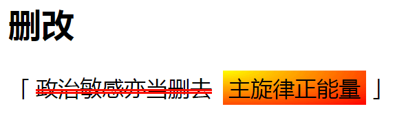
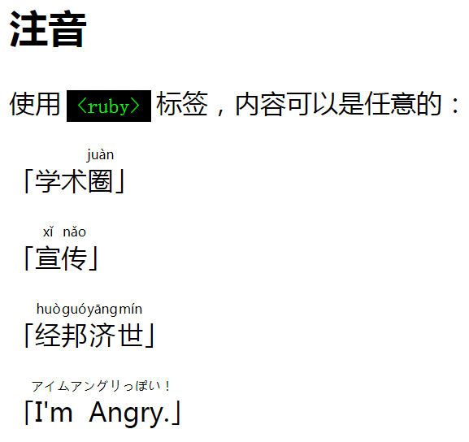
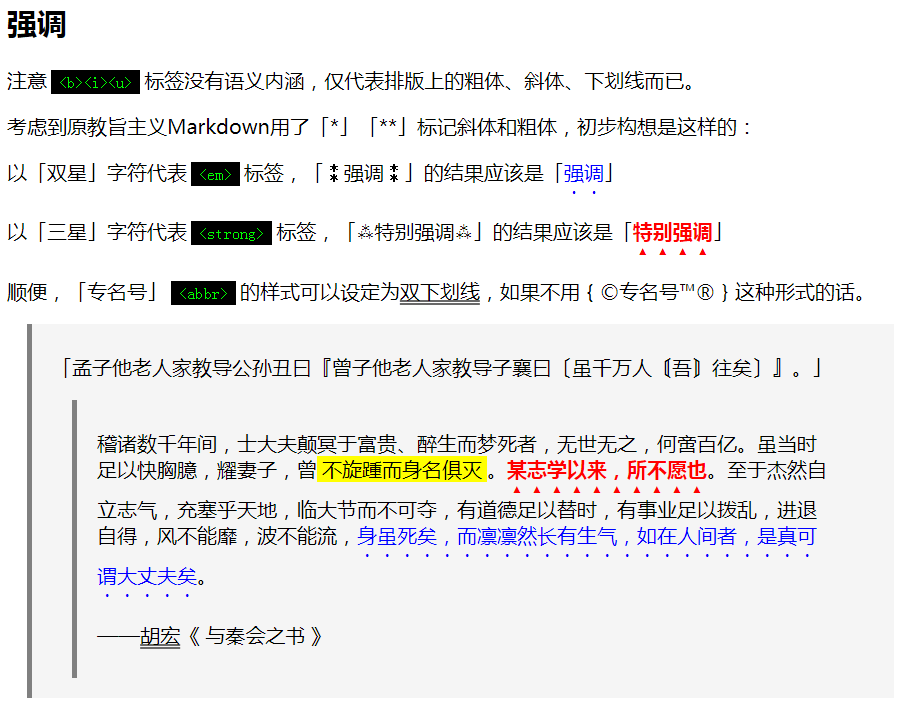
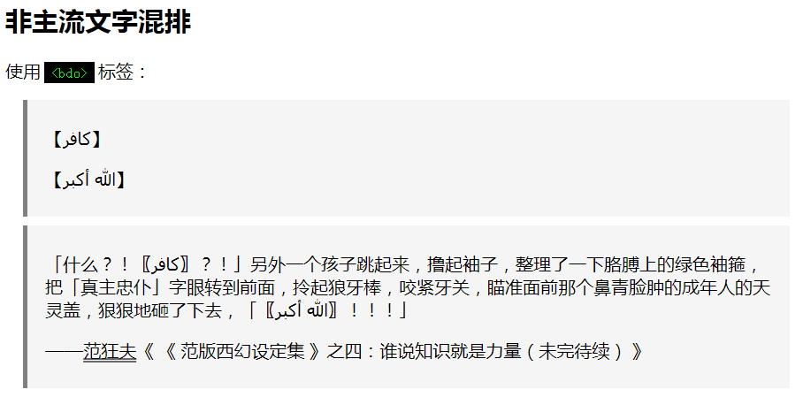
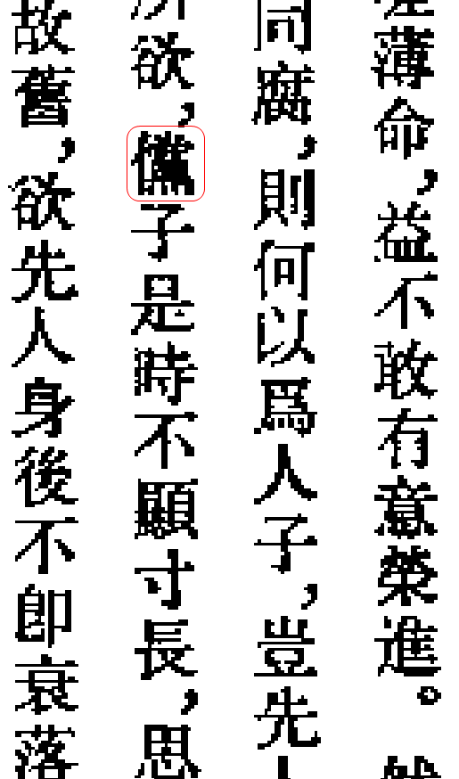

查缺补漏
因为是主观唯心主义者贝叶斯革命战士在极端个人主义原则指导下，从自己独立的人格和意志出发，用自己的脑壳思考，为了自己的需求进行自力更生艰苦奋斗自己动手丰衣足食，所以回顾码字中出现的各种场景，发现前一篇提到的内容还不甚完整。
不仅仅是我，其它活跃于新时代中国特色社会主义大好形势下繁荣的中文互联网上的帐号，经常也会出现一些当前各大论坛和站点并不支持的「修辞」手段。就比方说「删改」和「注音」，最近应景的可以经常看到「高考成绩出来了，家里让我报诈骗（划掉）金融专业，接下来该怎么办」这种措辞。这种修辞手段，其实HTML早就已经支持了，只是兲朝这批互联网大鳄不支持而已。
先说「删改」功能，前一篇提到了使用「<del>」「<ins>」标签组合实现，在老迈年高的使用「BBCode」部分论坛程序中，倒是可以提供「[del]和[ins]」这种改写法，不过样式并没有精挑细选，尤其是没有请教那些忠君爱国的童年设计工作者。
这里抛砖引玉，提供一个伟大光荣正确的样式，供各位参考。
使用
del {
margin: 0 0.25em;
text-decoration: red double line-through;
}
ins {
margin: 0 0.25em;
padding: 0.125em 0.25em;
font-style: normal;
text-decoration: none;
background-image: radial-gradient(farthest-corner at 0 0, yellow, red);
}
这种样式，对
<p>「<del>政治敏感亦当删去</del><ins>主旋律正能量</ins>」</p>
进行渲染的结果，是这样的：

删改样式
前者指定「text-decoration」属性，把默认的单删除线替换为醒目的红色双删除线；后者除了取消默认的下划线状态外，还使用了放射渐变效果实现「太阳出来金晃晃，照得童年才俊心里亮」的效果。
之前在SVG相关各篇当中已经解释过了渐变效果，这是CSS内置支持的功能可以直接作用在区域当中，比如图中的「背景图片」属性。当然肯定会有人指责简便起见指定左上角「0，0」原点为核心，是在恶意政治隐喻「西边的太阳就要落山了，杂胡野种牛鬼蛇神的末日就要来到」。
再说「注音」功能，除了「诈骗（划掉）金融」这种修辞方式之外，还经常出现「写作金融读作诈骗」或「金（zha）融（pian）」这种表达方式。这种功能在html当中实现也很简单，使用「<ruby>」标签实现，还提供了向后兼容的手段。
对于不支持「头顶注音」的浏览器，提供了后附文本的兼容方式，所以源码写起来会繁琐一些。
<p>使用<code><ruby></code>标签，内容可以是任意的：</p>
<p>「<span>学术<ruby>圈<rp>（</rp><rt>juàn</rt><rp>）</rp></ruby></span>」</p>
<p>「<span><ruby>宣<rp>（</rp><rt>xǐ</rt><rp>）</rp>传<rp>（</rp><rt>nǎo</rt><rp>）</rp></ruby></span>」</p>
<p>「<span><ruby>经<rp>（</rp><rt>huò</rt><rp>）</rp>邦<rp>（</rp><rt>guó</rt><rp>）</rp>济<rp>（</rp><rt>yāng</rt><rp>）</rp>世<rp>（</rp><rt>mín</rt><rp>）</rp></ruby></span>」</p>
<p>「<span><ruby>I'm Angry.<rp>[</rp><rt>アイムアングリっぽい！</rt><rp>]</rp></ruby></span>」</p>
由于当代桌面主流浏览器都已经与时俱进，上面这段的渲染效果是这样的：

注音
还要补充说明，对于「高亮」效果，也是html内置功能，使用「<mark>」标签实现。不单独举例，合并在下面例子当中。
上面对于「主旋律正能量」的措辞，运用了Markdown语法「*」「**」分别实现斜体和粗体效果，对应html的「<i>」「<b>」标签。这两个标签仅仅是指明表现形式，并没有语义效果，于是若是在样式当中偏偏不指定斜体和粗体，反而看上去名不正言不顺。
就是因为这个理由，html提供了语义级别的标签「<em>」「<strong>」，分别代表了需要「强调」和需要「特别强调」的内容，样式的默认实现是斜体和粗体而已。
所以，结合前几篇的例子，设定了更加醒目的样式效果：
mark {
background-color: yellow;
color: black;
padding: 0 0.25em;
}
abbr {
text-decoration: dimgray double underline;
}
em {
font-style: normal;
color: blue;
text-emphasis: blue dot;
text-emphasis-position: under left;
-webkit-text-emphasis: blue dot;
-webkit-text-emphasis-position: under left;
}
strong {
font-style: normal;
font-weight: bolder;
color: red;
text-emphasis: red triangle;
text-emphasis-position: under left;
-webkit-text-emphasis: red triangle;
-webkit-text-emphasis-position: under left;
}
其中出现了「-webkit-」前缀，这是Chrome/Safari/Opera等浏览器在W3C推荐标准出台之前的率先实现，而FireFox较新版则不需要。所以写了两遍，保证支持主流浏览器前瞻功能。业内都知道，针对FireFox的是「-moz-」前缀，而「-o-」前缀用于旧版Opera浏览器，现在已经不需要了。
总之，效果如下：

强调
如何？看上去「正规」多了吧？让咱用大拇指或食指「可视化」的排版，或许还有些难度，但是若是用十根手指敲出极简主义代码呼召浏览器降临渲染，那就可以依赖浏览器开发团队之设计工作者的成果了也。
是为「君子不器」「君子生非异也，善假于物也」……啊，刚想起来，我是「言必信行必果硁硁然」的小人，这模板套不上。
还有一个需求，我自己码字的时候遇到过，想必使用类似题材的码字工作者也会遇到。那就是「从右往左」的非主流文字如何与汉字混合排版。在浏览器当中很简单，html提供了内置实现，就是「<bdo>」标签。
为了醒目起见，顺便指定汉语与非主流文字的引号样式，引用样式不变：
q:lang(zh) {
quotes: "「" "」" "『" "』" "〔" "〕" "〘" "〙";
}
q:lang(ar) {
quotes: "【" "】" "〖" "〗";
}
cite {
font-style: normal;
}
cite::before {
content: "《";
margin-right: 0.25em;
}
cite::after {
content: "》";
margin-left: 0.25em;
}
在源码中要指定每个区块的「语种」，浏览器才可以到什么山上唱什么歌见什么人说什么话碰上什么文字用什么标点：
<blockquote lang="ar">
<p><bdo dir="rtl"><q lang="ar">كافر</q></bdo></p>
<p><q lang="ar"><bdo dir="rtl">الله أكبر</bdo></q></p>
</blockquote>
<blockquote lang="zh">
<p><q>什么？！<q lang="ar"><bdo dir="rtl">كافر</bdo></q>？！</q>另外一个孩子跳起来，撸起袖子，整理了一下胳膊上的绿色袖箍，把<q>真主忠仆</q>字眼转到前面，拎起狼牙棒，咬紧牙关，瞄准面前那个鼻青脸肿的成年人的天灵盖，狠狠地砸了下去，<q><q lang="ar"><bdo dir="rtl">الله أكبر</bdo></q>！！！</q></p>
<p>——<abbr>范狂夫</abbr><cite><cite>范版西幻设定集</cite>之四：谁说知识就是力量（未完待续）</cite></p>
</blockquote>
里面出现的非主流文字分别是「卡菲勒」和「阿拉胡阿克巴」，我从繁荣的中文互联网上搜索并复制粘贴下来的，若是有拼写错误请无视。
效果是这样的：

混排
指定了语种之后，对应的引号就正确显示出来了。而「<q>」和「<bdo>」之间的嵌套关系也都试验过了（上面那个块引用），在简单的情况下似乎没有影响，没出现括弧背靠背的怪现状。我也没有进一步测试长篇非主流文字当中的情况。
顺便，「<cite>」标签不能嵌套，也不能指定「多层书名号」，这就是我犹豫要不要提供标记的一个原因。图中所示的效果，若是纯手打应该是「《〈范版西幻设定集〉之四：〈谁说知识就是力量〉（未完待续）》」这种，注意书名号的嵌套使用。
未雨绸缪
前天没想到而昨天想起来的排版需求就是上面这些。而今天早上爬起来一琢磨，还有个最大块需求没考虑到，也是包括但不限于兲朝的东亚特色：「竖排」。
前面在《三自绘图运动》当中提到了竖排相关话题，就是「writing-mode」属性，也是HTML/CSS内置功能。虽然实现各不相同，可能还有一堆想当然的设定并不准确，但是并不妨碍在实践中广泛应用。
比方说许多「读者」都知道日本文字密集型出版物基本上都是竖排，包括但不限于电子书。繁荣的中文互联网上还有一批活跃用户主动自制电子书并热情的介绍经验，内容包括但不限于古籍。
如果要「绝知此事要躬行」，那么接下来的问题主要就是素材了。虽然随便找点文字都行，但是太没有诚意了也。正如「古色古香西洋风」字体那样，咱「古色古香东洋风」样式看上去也得有点「怀旧乡愁」的气氛，比方说「书名号」和「专名号」。
之前一直使用的素材，是胡宏的《与秦会之书》片段，这个片段在砥砺奋进五年来被忠君爱国的童年才俊拿来到处诈骗过很多次了。说过了因为胡宏号「五峰」，于是籍贯「湖北五峰」的王某某，就经常凭借这个「巧合」而到处打哑谜刷声望蹭热点给自己脸上贴金，虽然其政治、经济、文化、军事立场与胡宏当年完全背道而驰。
昨晚新闻联播当中还出场了，不外乎「童年富则元朝富，童年强则元朝强」，指挥「殖民主义童年团」在繁荣的中文互联网上不知开设了多少广告水军帐号，到处推销那一套「两少一宽」的「元朝特色社会主义核心价值观」。
所以，就用胡宏的素材大耳贴子抽这帮数典忘祖的「胡人」吧。底本是中华书局的《胡宏集》，在其中《书》（信件）一节，写给秦桧的《与秦会之书》排名第二，而第一则是《上光尧皇帝书》，长篇大论写给赵构的。
我手头有实体书还不在身边，从网上下载过扫描版，但没找到文字版，于是还得自己想办法。这时候，当前环境下的「Microsoft™©® OneNote™©® 2010」就派上用场了，不需要第三方OCR软件。
过程长话短说：先去下载「Office 2010」的「繁体中文语言包」，注意安装的时候要「自订」并且选中「文本扫描和校对工具」功能。然后用SumatraPDF或其他阅读器打开电子书，打印相关页面发送到OneNote，接下来的步骤网上都有，略。
识别准确率还可以，有些错误需要手改。一方面是竖排书名号专名号都是直线或波浪线容易窜入正文，另一方面则是扫描版质量本来就不怎么样，实体书也差不多，估计都是铅字时代旧纸型上面挖改的。
总之，万言书篇幅太长，不管了，先把《与秦会之书》文本弄出来：
與秦會之書
癸亥春，嘗拜起居之間，自是還稟傳業之誨，不敢失墜。上搜羲炎姚姒之遺文，中考商姬孔孟之大訓，下觀兩漢，徧閱歷代，以及五季，數千年間治亂之迹，正如風雲感會，來無定形，去無定體。得其道者昌，失其道者亡，故大要治亂，必本于人。
稽諸數千年問，士大夫顛冥于富貴、醉生而夢死者，無世無之，何啻百億。雖當時足以快胸臆，耀妻子，曾不旋踵而身名俱減。某志學以來，所不願也。至于傑然自立志氣，充塞乎天地，臨大節而不可奪，有道德足以贊時，有事業足以撥亂，進退自得，風不能靡，波不能流，身雖死矣，而凜凜然長有生氣，如在人間者，是真可謂大丈夫矣。
某讀其書，按其事，遐想其人，意其智中所存，澹然直與神明通，不可以口傳耳受也。方推其所存于數千年文字之中，茫乎昧乎，未能望其藩籬，窺其門戶，又況其堂奧乎！業當從事于斯，不敢半塗而廢，此某之所以逡巡歷年，若自棄于門下，未能進而求仕者也。竊伏思念四十三年矣。
先人卻世，忽已十載。惟是，布衣藜杖，尋壑經丘，勸課農桑，以供衣食，不如是，則啼飢號寒，且無以供粢盛，奉祭祀，將飄零慘淡，無以成其志矣。積憂思，與勤苦，而齒落髮白，夙興冠櫛，引鏡自窺，顏色枯搞，形容憔悴；身之窮困，如此足矣。
去年復哭子，而今年又喪婦，自嗟薄命，益不敢有意榮進。然立身行道，揚名後世，以顯父母，聖人之訓也。苟泊然無意于是，甘與草木同腐，則何以為人子，豈先人平日教詔之所望耶！矧今聖明在上，而相公丈端秉化權，念及寒微，下詢所欲，■于是時不顯寸長，思自振耀，則真自棄矣。
昔孔子成人之美，今相公丈曲敦故舊，欲先人身後不即衰落，將使某兄弟各遂其志，願人以所長表見于世，此誠莫大之德。若用不以其才，則醜拙陳露，非所以成其美矣。長沙湘西嶽麓山書院元是賜額，祖宗時嘗命山長主之，今基址皆在，湘山負其背，文水縈其前，靜深消曠，真士子修習精廬之地也。
至道二年，潭守李允則脩而廣之，乞降書史以厚民風。天聖八年，漕臣黃總奏乞特授山長進士孫胄一官，當時皆從之。今若令潭守與漕臣興復舊區，重賜院宇，以某有繼述其先人之志，特命為山長，依州縣監當官，給以廩祿，于以表朝廷崇儒廣教之美。
凡學舍，諸生不樂近城市，願居山間者，並聽之。俾舒卷數百千年之文，行思坐誦，精一于斯，人一己百，人十己千，庶幾愚而能明，柔而能強，可以繼古人之後塵，而為方來之先覺矣。
请注意「人工校对」是我自己干的，还不敢保证其中没有错误。比如自作主张把一堆印刷的「子」字改为「于」字，还有个原文「迹」字，目前的输入法在繁体模式下只有「跡」字，不知道是不是异体字，只能留着疑似简体的原文。
其中那个黑色方块「■」是实在认不出来了，只好留在文中，扫描版原图（尽可能放大了）是这样的：

插图
哪位朋友有更好的版本？请教一下这个字到底是什么。